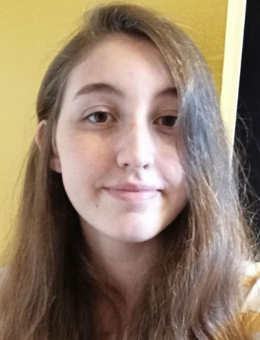
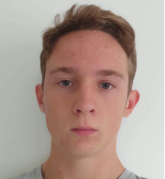

Pour commencer, je m’appelle Alice Cariou. Pour me présenter simplement, j’ai toujours été curieuse et intéressée par des choses variées, dont l’informatique. Pourtant, je n’ai envisagé de faire mes études dans ce domaine que très tard, car d’autres domaines, tels que la musique me sont également très cher.

Je m’appelle Baptiste Perrier, j’ai 18 ans et je suis étudiant en première année dans une école d’ingénieur en informatique. J’ai toujours été intéressé par tout ce qui touchait aux sciences, que ce soit les mathématiques, la physique mais surtout à la logique que ça soit de l'électricité, de l'algorithmique ou tout autre domaine d’application

Je m'appelle Enzo Deloye, je redouble ma 1er année d’epita, mais je dois principalement m’occuper du site internet pour le projet je n’avais jamais coder de site web avant c’est pourquoi je voulais me dedans pour apprendre comme un site web était coder puis car ça me servir à l’avenir de savoir en coder un. Je dois aussi m’occuper des interactions du personnage avec son environnement.